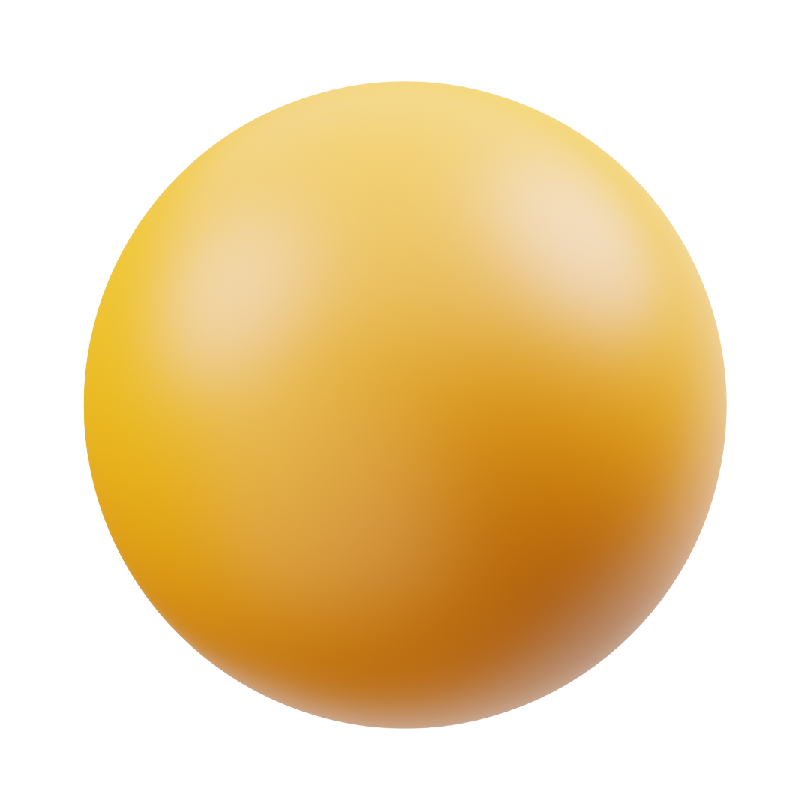

Círculo
 O círculo, é uma figura geométrica plana que é definida da seguinte maneira:
Círculo é o conjunto de pontos resultantes da união entre uma circunferência e seus pontos internos. Em outras palavras, o círculo é a área cuja fronteira é uma circunferência.
Tomando novamente os conhecimentos vindos da Geometria Analítica, a equação do círculo é praticamente igual à equação da circunferência. A diferença encontra-se no fato de o círculo ser um conjunto de pontos menor ou igual ao raio. A partir disso, temos a seguinte equação:
dAC ≤ r
√[(a – x)2 + (b – y)2] ≤ r
(a – x)2 + (b – y)2 ≤ r2
Elementos do círculo
Os elementos mais importantes do círculo são o centro e o raio. O centro, como o nome sugere, é o ponto central do círculo. Já o raio é a distância entre o centro do círculo e sua borda.
Ao escrever sobre um círculo (ou circunferência), normalmente indicamos o centro e o raio entre parênteses e separados por vírgula. Assim, um círculo c de centro P e raio r é representado por:
c(P,r)
Outro elemento do círculo é o diâmetro, que corresponde ao segmento que cruza o centro do círculo e tem extremidades em dois pontos do círculo. Assim, a medida do diâmetro é o dobro da medida do raio.